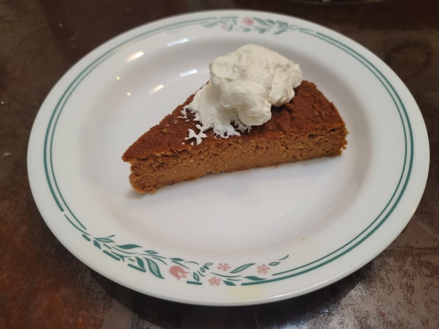

Carrot Cheese Cake

Ingredients:
- 3 cups Carrot pulp
- 1/2 - 3/4 cup Sugar
- 8 oz Cream cheese, softened
- 2 tbsp Olive oil
- 4 Eggs
- 1/2 cup Milk
- 1 tsp Ground ginger
- 2 tsp Cinnamon
- 1/2 tsp Ground cardamom
- 1 cup Pecans, ground
- 2 tsp Baking powder
- Optional: Whipped Cream
Instructions:
- Preheat an oven to 375 degrees Fahrenheit.
- Sift through the carrot pulp to make sure that there are no large pieces.
- Place the sugar, cream cheese, and olive oil into a large bowl and cream with an electric hand mixer. Add eggs and mix again with the hand mixer. Then add the carrot pulp, milk, and spices and mix thoroughly. Add in the pecan and baking powder and mix one last time.
- Butter the sides of a 9 inch springform pan and line with parchment paper. Pour in the batter and level with a rubber spatula.
- Place the cake into the oven and bake for 15 minutes. Then lower the heat to 325 degrees Fahrenheit and bake for 30 more minutes or until a knife inserted into the center comes out clean.
- Remove from the oven and let cool completely. Then place into a refrigerator and let chill for 2 hours. Serve with whipped cream if desired.